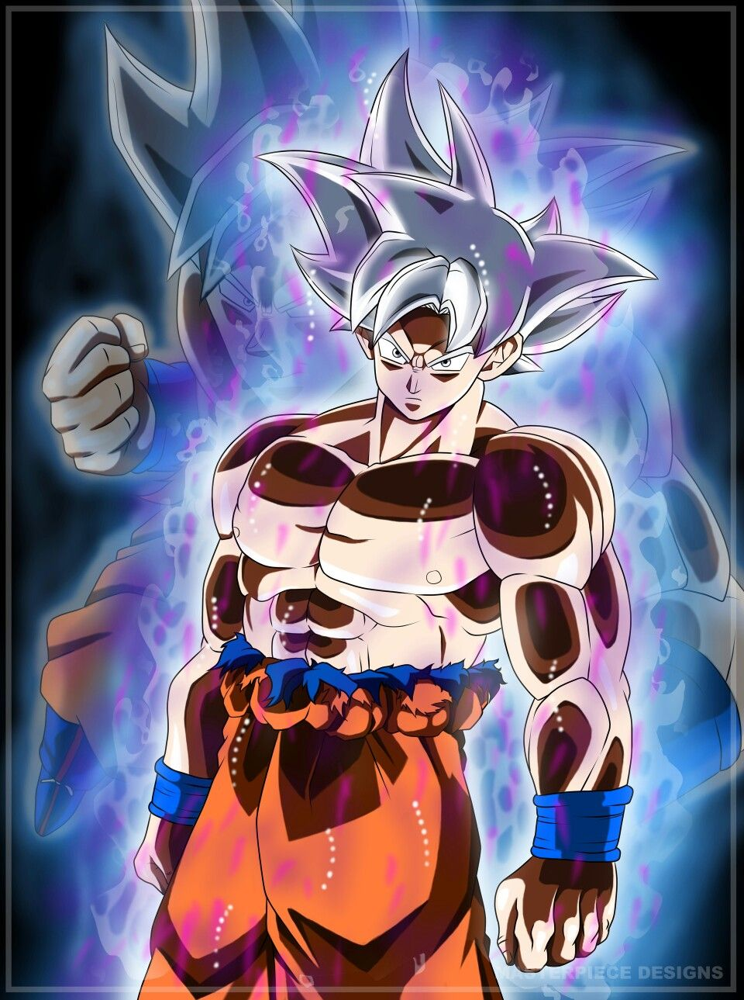

y este es el párrafo de inicio donde vamos a explicar las cosas invreibles que se pueden hacer con ramas

Los blogs so la mejor forma de compartir informacion y tus ideas.Mucho mas que ir a conferencias o salir en youtube. excepto si eres un rocsta. Pero estadisticamente no lo eres.... por ahora.
Sucibete y dale like